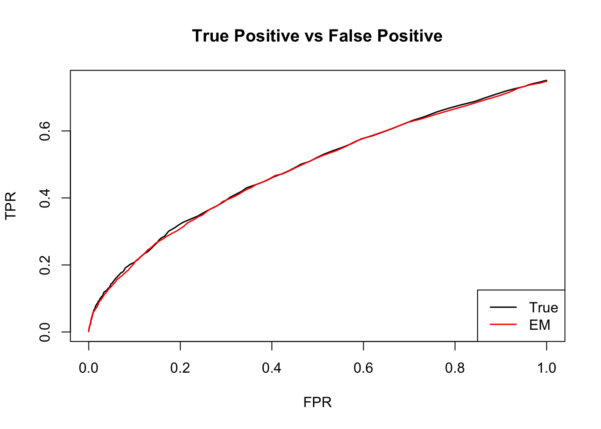

Estimate cor — MLE EM rho
Yuxin Zou
2018-8-3
Last updated: 2018-08-20
workflowr checks: (Click a bullet for more information)-
✔ R Markdown file: up-to-date
Great! Since the R Markdown file has been committed to the Git repository, you know the exact version of the code that produced these results.
-
✔ Environment: empty
Great job! The global environment was empty. Objects defined in the global environment can affect the analysis in your R Markdown file in unknown ways. For reproduciblity it’s best to always run the code in an empty environment.
-
✔ Seed:
set.seed(1)The command
set.seed(1)was run prior to running the code in the R Markdown file. Setting a seed ensures that any results that rely on randomness, e.g. subsampling or permutations, are reproducible. -
✔ Session information: recorded
Great job! Recording the operating system, R version, and package versions is critical for reproducibility.
-
Great! You are using Git for version control. Tracking code development and connecting the code version to the results is critical for reproducibility. The version displayed above was the version of the Git repository at the time these results were generated.✔ Repository version: e39ab91
Note that you need to be careful to ensure that all relevant files for the analysis have been committed to Git prior to generating the results (you can usewflow_publishorwflow_git_commit). workflowr only checks the R Markdown file, but you know if there are other scripts or data files that it depends on. Below is the status of the Git repository when the results were generated:
Note that any generated files, e.g. HTML, png, CSS, etc., are not included in this status report because it is ok for generated content to have uncommitted changes.Ignored files: Ignored: .DS_Store Ignored: .Rhistory Ignored: .Rproj.user/ Ignored: analysis/.DS_Store Ignored: analysis/.Rhistory Ignored: analysis/figure/ Ignored: analysis/include/.DS_Store Ignored: data/.DS_Store Ignored: docs/.DS_Store Ignored: output/.DS_Store Untracked files: Untracked: analysis/Classify.Rmd Untracked: analysis/EstimateCorMaxEM.Rmd Untracked: analysis/EstimateCorMaxEMGD.Rmd Untracked: analysis/EstimateCorPrior.Rmd Untracked: analysis/EstimateCorSol.Rmd Untracked: analysis/HierarchicalFlashSim.Rmd Untracked: analysis/MashLowSignal.Rmd Untracked: analysis/Mash_GTEx.Rmd Untracked: analysis/MeanAsh.Rmd Untracked: analysis/OutlierDetection.Rmd Untracked: analysis/OutlierDetection2.Rmd Untracked: analysis/OutlierDetection3.Rmd Untracked: analysis/OutlierDetection4.Rmd Untracked: analysis/Test.Rmd Untracked: analysis/mash_missing_row.Rmd Untracked: code/MashClassify.R Untracked: code/MashCorResult.R Untracked: code/MashSource.R Untracked: code/Weight_plot.R Untracked: code/addemV.R Untracked: code/estimate_cor.R Untracked: code/generateDataV.R Untracked: code/johnprocess.R Untracked: code/sim_mean_sig.R Untracked: code/summary.R Untracked: data/Blischak_et_al_2015/ Untracked: data/scale_data.rds Untracked: docs/figure/Classify.Rmd/ Untracked: docs/figure/OutlierDetection.Rmd/ Untracked: docs/figure/OutlierDetection2.Rmd/ Untracked: docs/figure/OutlierDetection3.Rmd/ Untracked: docs/figure/Test.Rmd/ Untracked: docs/figure/mash_missing_whole_row_5.Rmd/ Untracked: docs/include/ Untracked: output/AddEMV/ Untracked: output/CovED_UKBio_strong.rds Untracked: output/CovED_UKBio_strong_Z.rds Untracked: output/Flash_UKBio_strong.rds Untracked: output/MASH.10.em2.result.rds Untracked: output/MASH.10.mle.result.rds Untracked: output/MASH.result.1.rds Untracked: output/MASH.result.10.rds Untracked: output/MASH.result.2.rds Untracked: output/MASH.result.3.rds Untracked: output/MASH.result.4.rds Untracked: output/MASH.result.5.rds Untracked: output/MASH.result.6.rds Untracked: output/MASH.result.7.rds Untracked: output/MASH.result.8.rds Untracked: output/MASH.result.9.rds Untracked: output/Mash_EE_Cov_0_plusR1.rds Untracked: output/Trail 1/ Untracked: output/Trail 2/ Untracked: output/UKBio_mash_model.rds Unstaged changes: Modified: analysis/EstimateCorMaxMash.Rmd Modified: analysis/Mash_UKBio.Rmd Modified: analysis/mash_missing_samplesize.Rmd Modified: output/Flash_T2_0.rds Modified: output/Flash_T2_0_mclust.rds Modified: output/Mash_model_0_plusR1.rds Modified: output/PresiAddVarCol.rds
Expand here to see past versions:
| File | Version | Author | Date | Message |
|---|---|---|---|---|
| Rmd | e39ab91 | zouyuxin | 2018-08-20 | wflow_publish(“analysis/EstimateCorMaxEM2.Rmd”) |
| html | db6da02 | zouyuxin | 2018-08-20 | Build site. |
| Rmd | 6f5ca72 | zouyuxin | 2018-08-20 | wflow_publish(“analysis/EstimateCorMaxEM2.Rmd”) |
| html | 6281062 | zouyuxin | 2018-08-15 | Build site. |
| Rmd | 3e3e128 | zouyuxin | 2018-08-15 | wflow_publish(c(“analysis/EstimateCor.Rmd”, “analysis/EstimateCorMax.Rmd”, |
| html | bf28e18 | zouyuxin | 2018-08-14 | Build site. |
| Rmd | 15b85be | zouyuxin | 2018-08-14 | wflow_publish(c(“analysis/EstimateCorMax.Rmd”, “analysis/EstimateCorMaxEM2.Rmd”)) |
| html | 568fbe6 | zouyuxin | 2018-08-13 | Build site. |
| Rmd | 3ae3f08 | zouyuxin | 2018-08-13 | wflow_publish(c(“analysis/EstimateCor.Rmd”, |
library(mashr)Loading required package: ashrlibrary(knitr)
library(kableExtra)
source('../code/estimate_cor.R')
source('../code/generateDataV.R')
source('../code/summary.R')EM
We use EM algorithm to update \(\rho\).
B is the \(n\times p\) true value matrix. \(\mathbf{z}\) is a length n vector.
E step
\[ P(\hat{B},B,\mathbf{z}|\rho, \pi) = \prod_{i=1}^{n} \prod_{k=0}^{K}\left[\pi_{k}N(\hat{b}_{i}; b_{i}, V)N(b_{i}; 0, U_{k})\right]^{\mathbb{I}(z_{i}=k)} \]
\[ \mathbb{E}_{\mathbf{z},B|\hat{B}} \log P(\hat{B},B,\mathbf{z}|\rho, \pi) = \sum_{i=1}^{n} \sum_{k=0}^{K} P(z_{i}=k|\hat{b}_{i})\left[ \log \pi_{k} + \mathbb{E}_{B|\hat{B}}(\log N(\hat{b}_{i}; b_{i}, V)) + \mathbb{E}_{B|\hat{B}}(\log N(b_{i}; 0, U_{k})) \right] \]
\[ \begin{align*} \log N(\hat{b}_{i}; b_{i}, V) + \log N(b_{i}; 0, U_{k}) &= -\frac{p}{2}\log 2\pi -\frac{1}{2}\log |V| - \frac{1}{2}(\hat{b}_{i}-b_{i})^{T}V^{-1}(\hat{b}_{i}-b_{i}) -\frac{p}{2}\log 2\pi -\frac{1}{2}\log |U_{k}| - \frac{1}{2}b_{i}^{T}U_{k}^{-1}b_{i} \\ &= -p\log 2\pi -\frac{1}{2}\log |U_{k}| -\frac{1}{2}\log |V| - \frac{1}{2}\hat{b}_{i}^{T}V^{-1}\hat{b}_{i} + \hat{b}_{i}^{T}V^{-1}b_{i} -\frac{1}{2}b_{i}^{T}V^{-1}b_{i} - \frac{1}{2}b_{i}^{T}U_{k}^{-1}b_{i} \\ \mathbb{E}_{b_{i}|\hat{b}_{i}}\left[ \log N(\hat{b}_{i}; b_{i}, V) + \log N(b_{i}; 0, U_{k}) \right] &= -p\log 2\pi -\frac{1}{2}\log |U_{k}| -\frac{1}{2}\log |V| - \frac{1}{2}\hat{b}_{i}^{T}V^{-1}\hat{b}_{i} + \hat{b}_{i}^{T}V^{-1}\mathbb{E}(b_{i}|\hat{b}_{i}) -\frac{1}{2}tr\left(V^{-1}\mathbb{E}(b_{i}b_{i}^{T}|\hat{b}_{i}) \right) - \frac{1}{2}tr\left(U_{k}^{-1}\mathbb{E}(b_{i}b_{i}^{T}|\hat{b}_{i}) \right) \end{align*} \]
V has a specific form: \[ V = \left( \begin{matrix}1 & \rho \\ \rho & 1 \end{matrix} \right) \] Let \(\mu_{i} = \mathbb{E}(b_{i}|\hat{b}_{i})\) \[ \begin{align*} \mathbb{E}_{b_{i}|\hat{b}_{i}}\left[ \log N(\hat{b}_{i}; b_{i}, V) + \log N(b_{i}; 0, U_{k}) \right] &= -2\log 2\pi -\frac{1}{2}\log |U_{k}| -\frac{1}{2}\log(1-\rho^2) - \frac{1}{2(1-\rho^2)}\left(\hat{b}_{i1}^2 + \hat{b}_{i2}^2 -2\hat{b}_{i1} \mu_{i1} -2\hat{b}_{i2} \mu_{i2} + \mathbb{E}(b_{i1}^2|\hat{b}_{i}) + \mathbb{E}(b_{i2}^2|\hat{b}_{i}) - 2\hat{b}_{i1}\hat{b}_{i2}\rho + 2 \hat{b}_{i1}\mu_{i2}\rho +2\hat{b}_{i2}\mu_{i1}\rho - 2\rho\mathbb{E}(b_{i1}b_{i2}|\hat{b}_{i}) \right) - \frac{1}{2}tr\left(U_{k}^{-1}\mathbb{E}(b_{i}b_{i}^{T}|\hat{b}_{i}) \right) \end{align*} \]
\[ \gamma_{z_{i}}(k) = P(z_{i}=k|X_{i}) = \frac{\pi_{k}N(x_{i}; 0, V+U_{k})}{\sum_{k'=0}^{K}\pi_{k'}N(x_{i}; 0, V + U_{k'})} \]
M step
\(V\): \[ \begin{align*} f(V^{-1}) = \sum_{i=1}^{n} \sum_{k=0}^{K} \gamma_{Z_{i}}(k)\left[ -p\log 2\pi -\frac{1}{2}\log |U_{k}| -\frac{1}{2}\log |V| - \frac{1}{2}\hat{b}_{i}^{T}V^{-1}\hat{b}_{i} + \hat{b}_{i}^{T}V^{-1}\mathbb{E}(b_{i}|\hat{b}_{i}) -\frac{1}{2}tr\left(V^{-1}\mathbb{E}(b_{i}b_{i}^{T}|\hat{b}_{i}) \right) - \frac{1}{2}tr\left(U_{k}^{-1}\mathbb{E}(b_{i}b_{i}^{T}|\hat{b}_{i}) \right) \right] \end{align*} \]
\[ \begin{align*} f(V^{-1})' &= \sum_{i=1}^{n} \sum_{k=0}^{K} \gamma_{Z_{i}}(k)\left[ \frac{1}{2}V - \frac{1}{2}\hat{b}_{i}\hat{b}_{i}^{T} + \mathbb{E}(b_{i}|\hat{b}_{i})\hat{b}_{i}^{T} - \frac{1}{2} \mathbb{E}(b_{i}b_{i}^{T}|\hat{b}_{i}) \right] = 0 \\ \frac{1}{2}Vn &= \sum_{i=1}^{n} \sum_{k=0}^{K} \gamma_{Z_{i}}(k)\left[\frac{1}{2}\hat{b}_{i}\hat{b}_{i}^{T} - \mathbb{E}(b_{i}|\hat{b}_{i})\hat{b}_{i}^{T} + \frac{1}{2} \mathbb{E}(b_{i}b_{i}^{T}|\hat{b}_{i}) \right] \\ \hat{V} &= \frac{1}{n} \sum_{i=1}^{n} \left[\hat{b}_{i}\hat{b}_{i}^{T} - 2\mathbb{E}(b_{i}|\hat{b}_{i})\hat{b}_{i}^{T} + \mathbb{E}(b_{i}b_{i}^{T}|\hat{b}_{i}) \right] \\ &= \frac{1}{n} \sum_{i=1}^{n} \mathbb{E}\left[ (\hat{b}_{i} - b_{i})(\hat{b}_{i} - b_{i})^{T} | \hat{b}_{i}\right] \end{align*} \]
\(\rho\): \[ f(\rho) = \sum_{i=1}^{n} \sum_{k=1}^{K} \gamma_{Z_{i}}(k)\left[-2\log 2\pi -\frac{1}{2}\log |U_{k}| -\frac{1}{2}\log(1-\rho^2) - \frac{1}{2(1-\rho^2)}\left(\hat{b}_{i1}^2 + \hat{b}_{i2}^2 -2\hat{b}_{i1} \mu_{i1} -2\hat{b}_{i2} \mu_{i2} + \mathbb{E}(b_{i1}^2|\hat{b}_{i}) + \mathbb{E}(b_{i2}^2|\hat{b}_{i}) - 2\hat{b}_{i1}\hat{b}_{i2}\rho + 2 \hat{b}_{i1}\mu_{i2}\rho +2\hat{b}_{i2}\mu_{i1}\rho - 2\rho\mathbb{E}(b_{i1}b_{i2}|\hat{b}_{i}) \right) - \frac{1}{2}tr\left(U_{k}^{-1}\mathbb{E}(b_{i}b_{i}^{T}|\hat{b}_{i}) \right)\right] \]
\[ \begin{align*} f(\rho)' = \sum_{i=1}^{n} \sum_{k=1}^{K} \gamma_{Z_{i}}(k)\left[ \frac{\rho}{1-\rho^2} -\frac{\rho}{(1-\rho^2)^2}\left( \hat{b}_{i1}^2 + \hat{b}_{i2}^2 -2\hat{b}_{i1} \mu_{i1} -2\hat{b}_{i2} \mu_{i2} + \mathbb{E}(b_{i1}^2|\hat{b}_{i}) + \mathbb{E}(b_{i2}^2|\hat{b}_{i}) \right) -\frac{\rho^2+1}{(1-\rho^2)^2}\left( -\hat{b}_{i1}\hat{b}_{i2} + \hat{b}_{i1}\mu_{i2} +\hat{b}_{i2}\mu_{i1} - \mathbb{E}(b_{i1}b_{i2}|\hat{b}_{i}) \right) \right] &= 0 \\ \rho(1-\rho^2)n - \rho \sum_{i=1}^{n} \sum_{k=1}^{K} \gamma_{Z_{i}}(k) \left( \hat{b}_{i1}^2 + \hat{b}_{i2}^2 -2\hat{b}_{i1} \mu_{i1} -2\hat{b}_{i2} \mu_{i2} + \mathbb{E}(b_{i1}^2|\hat{b}_{i}) + \mathbb{E}(b_{i2}^2|\hat{b}_{i}) \right) - (\rho^2 + 1) \sum_{i=1}^{n} \sum_{k=1}^{K} \gamma_{Z_{i}}(k)\left( -\hat{b}_{i1}\hat{b}_{i2} + \hat{b}_{i1}\mu_{i2} +\hat{b}_{i2}\mu_{i1} - \mathbb{E}(b_{i1}b_{i2}|\hat{b}_{i}) \right) &= 0 \\ -n\rho^{3} - \rho^2 \sum_{i=1}^{n} \left( -\hat{b}_{i1}\hat{b}_{i2} + \hat{b}_{i1}\mu_{i2} +\hat{b}_{i2}\mu_{i1} - \mathbb{E}(b_{i1}b_{i2}|\hat{b}_{i}) \right) - \rho \sum_{i=1}^{n} \left( \hat{b}_{i1}^2 + \hat{b}_{i2}^2 -2\hat{b}_{i1} \mu_{i1} -2\hat{b}_{i2} \mu_{i2} + \mathbb{E}(b_{i1}^2|\hat{b}_{i}) + \mathbb{E}(b_{i2}^2|\hat{b}_{i}) -1\right) - \sum_{i=1}^{n} \left( -\hat{b}_{i1}\hat{b}_{i2} + \hat{b}_{i1}\mu_{i2} +\hat{b}_{i2}\mu_{i1} - \mathbb{E}(b_{i1}b_{i2}|\hat{b}_{i}) \right) &= 0 \end{align*} \]
The polynomial has either 1 or 3 real roots in (-1, 1).
Algorithm:
Input: X, Ulist, init_rho
Compute loglikelihood
delta = 1
while delta > tol
Given rho, Estimate pi using convex method (current mash method)
M step: update rho: find all roots of polynomial, if it has three real roots, choose the one with higher loglikelihood.
Compute loglikelihood
Update deltaData
\[ \hat{\beta}|\beta \sim N_{2}(\hat{\beta}; \beta, \left(\begin{matrix} 1 & 0.5 \\ 0.5 & 1 \end{matrix}\right)) \]
\[ \beta \sim \frac{1}{4}\delta_{0} + \frac{1}{4}N_{2}(0, \left(\begin{matrix} 1 & 0 \\ 0 & 0 \end{matrix}\right)) + \frac{1}{4}N_{2}(0, \left(\begin{matrix} 0 & 0 \\ 0 & 1 \end{matrix}\right)) + \frac{1}{4}N_{2}(0, \left(\begin{matrix} 1 & 1 \\ 1 & 1 \end{matrix}\right)) \]
n = 4000
set.seed(1)
n = 4000; p = 2
Sigma = matrix(c(1,0.5,0.5,1),p,p)
U0 = matrix(0,2,2)
U1 = U0; U1[1,1] = 1
U2 = U0; U2[2,2] = 1
U3 = matrix(1,2,2)
Utrue = list(U0=U0, U1=U1, U2=U2, U3=U3)
data = generate_data(n, p, Sigma, Utrue)m.data = mash_set_data(data$Bhat, data$Shat)
U.c = cov_canonical(m.data)
grid = mashr:::autoselect_grid(m.data, sqrt(2))
Ulist = mashr:::normalize_Ulist(U.c)
xUlist = mashr:::expand_cov(Ulist,grid,usepointmass = TRUE)
result <- mixture.EM2.times(data$Bhat, xUlist, init_rho = c(-0.7,0,0.7), grid=1)
plot(result$result$log_liks)
Expand here to see past versions of unnamed-chunk-4-1.png:
| Version | Author | Date |
|---|---|---|
| 568fbe6 | zouyuxin | 2018-08-13 |
The estimated \(\rho\) is 0.5576293.
m.data.em = mash_set_data(data$Bhat, data$Shat, V = matrix(c(1,result[[1]]$rho,result[[1]]$rho,1),2,2))
U.c = cov_canonical(m.data.em)
m.em = mash(m.data.em, U.c, verbose= FALSE)
null.ind = which(apply(data$B,1,sum) == 0)The log likelihood is -1.23021110^{4}. There are 37 significant samples, 1 false positives. The RRMSE is 0.5871084.
The estimated pi is
barplot(get_estimated_pi(m.em), las=2, cex.names = 0.7, main='EM rho', ylim=c(0,0.8))Expand here to see past versions of unnamed-chunk-6-1.png:
| Version | Author | Date |
|---|---|---|
| 6281062 | zouyuxin | 2018-08-15 |
| 568fbe6 | zouyuxin | 2018-08-13 |
The ROC curve:
m.data.correct = mash_set_data(data$Bhat, data$Shat, V=Sigma)
m.correct = mash(m.data.correct, U.c, verbose = FALSE)
m.correct.seq = ROC.table(data$B, m.correct)
m.em.seq = ROC.table(data$B, m.em)
Expand here to see past versions of unnamed-chunk-8-1.png:
| Version | Author | Date |
|---|---|---|
| 568fbe6 | zouyuxin | 2018-08-13 |
Session information
sessionInfo()R version 3.5.1 (2018-07-02)
Platform: x86_64-apple-darwin15.6.0 (64-bit)
Running under: macOS High Sierra 10.13.6
Matrix products: default
BLAS: /Library/Frameworks/R.framework/Versions/3.5/Resources/lib/libRblas.0.dylib
LAPACK: /Library/Frameworks/R.framework/Versions/3.5/Resources/lib/libRlapack.dylib
locale:
[1] en_US.UTF-8/en_US.UTF-8/en_US.UTF-8/C/en_US.UTF-8/en_US.UTF-8
attached base packages:
[1] stats graphics grDevices utils datasets methods base
other attached packages:
[1] kableExtra_0.9.0 knitr_1.20 mashr_0.2-11 ashr_2.2-10
loaded via a namespace (and not attached):
[1] Rcpp_0.12.18 pillar_1.3.0 compiler_3.5.1
[4] git2r_0.23.0 plyr_1.8.4 workflowr_1.1.1
[7] R.methodsS3_1.7.1 R.utils_2.6.0 iterators_1.0.10
[10] tools_3.5.1 digest_0.6.15 viridisLite_0.3.0
[13] tibble_1.4.2 evaluate_0.11 lattice_0.20-35
[16] pkgconfig_2.0.1 rlang_0.2.1 Matrix_1.2-14
[19] foreach_1.4.4 rstudioapi_0.7 yaml_2.2.0
[22] parallel_3.5.1 mvtnorm_1.0-8 xml2_1.2.0
[25] httr_1.3.1 stringr_1.3.1 REBayes_1.3
[28] hms_0.4.2 rprojroot_1.3-2 grid_3.5.1
[31] R6_2.2.2 rmarkdown_1.10 rmeta_3.0
[34] readr_1.1.1 magrittr_1.5 whisker_0.3-2
[37] scales_0.5.0 backports_1.1.2 codetools_0.2-15
[40] htmltools_0.3.6 MASS_7.3-50 rvest_0.3.2
[43] assertthat_0.2.0 colorspace_1.3-2 stringi_1.2.4
[46] Rmosek_8.0.69 munsell_0.5.0 doParallel_1.0.11
[49] pscl_1.5.2 truncnorm_1.0-8 SQUAREM_2017.10-1
[52] crayon_1.3.4 R.oo_1.22.0 This reproducible R Markdown analysis was created with workflowr 1.1.1